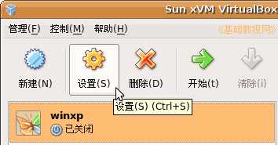
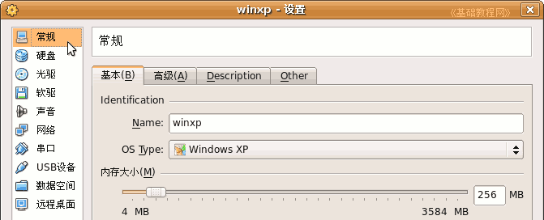
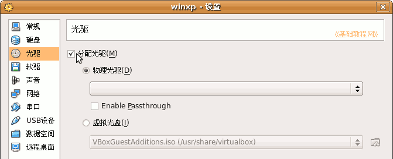
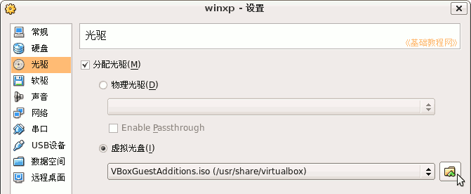
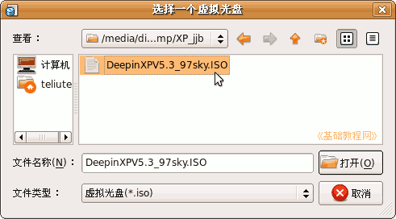
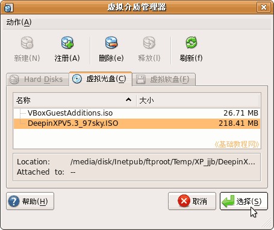
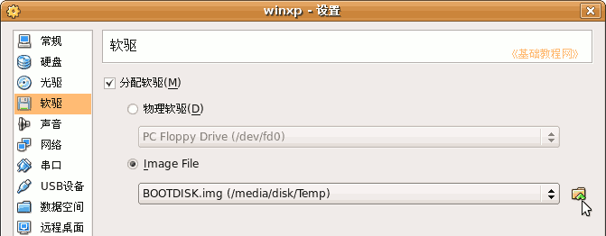
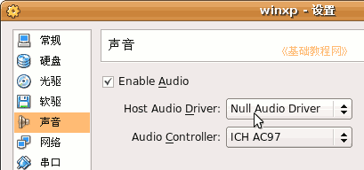
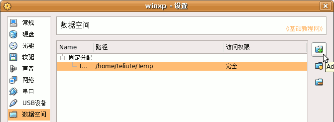

VirtualBox 虚拟机基础入门教程
作者：TeliuTe 来源：基础教程网
三、设置虚拟机 返回目录 下一课创建好虚拟机以后，我们还可以对它进行一些设置，下面我们来看一个练习；
1、设置虚拟机
1）启动主程序，进入主程序窗口，在工具栏中找到“设置”按钮，点击进入；

2）左边栏里上面是常规设置和硬盘设置，里面包括内存大小、硬盘数量等，看一下即可；

3）在第三个光驱中，打勾选中“分配光驱”，使用主机的光驱；

a.如果你有XP的安装镜像文件，也可以选下面的“虚拟光盘”，点右边的浏览按钮，进入加载ISO镜像文件的面板；

b.在出来的“虚拟光盘管理器”面板中，点“注册”按钮，在出来的浏览对话框里，找到自己的ISO镜像文件，点“打开”按钮；

c.回到管理器面板，点“选择”按钮，返回到设置面板；

4）接下来的软驱，如果要使用软盘或者使用软盘的IMG镜像，也可以选中“分配软驱”；

5）接下来的声音设置中，打勾选中“启用声音”，以后安装好XP后可以再来选择；

6）网络和串口先不用设置，选择下面的USB设备打勾选中，在右边的侧栏里点击带加号的按钮，添加系统中的设备；7）接下来的数据空间是共享用的，进入后点右边栏的加号按钮，添加一个主机中的文件夹，作为共享文件夹；

远程桌面不用设置，设置好以后点“确定”按钮，回到主程序窗口；本节学习了VirtualBox设置虚拟机的基本操作，如果你成功地完成了练习，请继续学习下一课内容；
本教程由86团学校TeliuTe制作|著作权所有
基础教程网：http://teliute.org
美丽的校园……
转载和引用本站内容，请保留作者和本站链接。